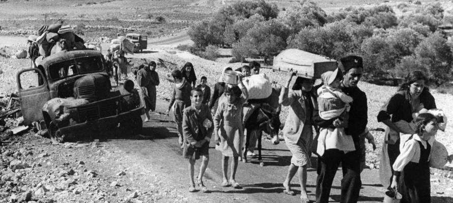

La phrase en question avec la fausse allégation diffamant l’État d’Israël a été supprimée, bien qu’aucune note de la rédaction n’explique la révision.
Par United with Israel Staff
À la suite d'un échange de courriels entre CAMERA UK et le quotidien britannique The Times, les rédacteurs ont supprimé l'affirmation anhistorique selon laquelle la fuite de centaines de milliers de Palestiniens pendant la guerre de 1948-1949 était due à l'agression israélienne, "au viol et à la torture", rapporte Adam Levick, de CAMERA- UK, site observateur des médias.
Un article du rédacteur politique écossais Kieran Andrews, paru le 26 mai 2020 dans le Times, sur la basé des commentaires récents de Richard Lyle (membre du Parlement écossais), fait référence à la «Nakba» comme à une «tragédie auto- infligée», affirme Levick. Le rédacteur en chef du Times a fourni un «arrière-plan» à l'article sur la raison pour laquelle les Arabes locaux ont fui pendant la guerre, en ces termes:
« Les historiens soutiennent que [la fuite des Palestiniens] a été largement motivée par l'agression israélienne, y compris le viol et la torture, et dans une bien moindre mesure par les autorités palestiniennes locales exhortant les gens à fuir. »
Comme l'a noté CAMERA-UK, « aucun historien sérieux, non propagandiste, n’a émis une telle affirmation - et en fait, lorsqu'on insistait, auprès les éditeurs ne pouvaient pas fournir le nom d'un seul historien qui partage cette opinion. »
Le site de veille médiatique a confirmé que la phrase en question, contenant la fausse allégation diffamatoire pour l'État d'Israël a été supprimée, bien qu'il n'y ait pas de note de l'éditeur expliquant les raisons de cette révision.
« Néanmoins, nous félicitons le Times - qui est habituellement l'un des médias britanniques les plus honnêtes à propos du conflit israélo-palestinien - d'avoir finalement retenu notre plainte et supprimé cette phrase », écrit Levick.
Guerre d'indépendance d'Israël: contexte historique
Le 14 mai 1948, David Ben Gurion, premier Premier ministre israélien, a proclamé la création d’Israël, État juif, dans la patrie biblique du peuple juif. Immédiatement après la naissance d’Israël en tant que nation, cinq pays arabes voisins - l’Égypte, la Syrie, le Liban, la Transjordanie et l’Iraq - ont déclaré la guerre à l’État naissant et ont ainsi déclenché la guerre d’indépendance d’Israël.
Bien qu'Israël soit sorti victorieux du conflit, plus d'Israéliens sont morts pendant la guerre d'indépendance que dans n'importe quelle autre guerre; plus de 4 000 soldats et 2 000 civils ont perdu la vie en combattant pour l'indépendance - environ un pour cent de la population totale d’alors. Quinze mille ont été blessés. Les pertes arabes sont estimées à environ 2 000 soldats d'invasion réguliers et à un nombre inconnu de forces arabes irrégulières.
Le jour où l'État moderne d'Israël a déclaré son indépendance est commémoré par ses ennemis comme le jour de la Nakba. «Nakba» est le terme arabe pour «catastrophe».
Pourquoi les Arabes ont-ils fui?
En 1948, les dirigeants arabes locaux ont conseillé à leurs électeurs de quitter le pays, leur assurant que les Arabes seraient victorieux et anéantiraient l'État juif, après quoi ils pourraient tous rentrer chez eux.
Enfin et surtout, aucune nation «palestinienne» n'a combattu les Israéliens - ils étaient tous des Arabes locaux, pas différents de ceux des pays voisins.
«Palestine» était le nom gréco-romain d'une région. En l'an 135 après JC, il devint le nom officiel de l'une des provinces de l'Empire romain dans le but d'effacer le lien entre le peuple juif et la Judée - la terre qu'ils habitaient depuis plus de 1000 ans.
En effet, il n'y a jamais eu de mention de la part des Arabes de Cisjordanie (Judée et Samarie) d'une nation palestinienne pendant que la Jordanie contrôlait le territoire et pendant que l'Égypte dirigeait la bande de Gaza. Ce faux récit a commencé après la guerre des Six Jours de 1967, quand Israël, menacé de destruction par les pays arabes environnants, a remporté une victoire miraculeuse, capturant le Sinaï et les hauteurs du Golan et libérant Jérusalem-Est et la Judée et la Samarie, la patrie biblique des Juifs Gens.
Qui sont les Palestiniens?
En fait, avant 1948, le terme «palestinien» faisait référence à tous les habitants de la Terre d'Israël, y compris les Juifs. Le Jerusalem Post s'appelait The Palestine Post; l'Orchestre philharmonique israélien était l'Orchestre symphonique de Palestine, etc. Les Juifs nés en Terre d'Israël étaient appelés Palestiniens [1].
De nombreuses découvertes archéologiques de ces dernières années confirment l'histoire juive en Terre d'Israël depuis des milliers d'années.
Traduction française de M. R. Macina
Mise en ligne sur Academia.edu, MàJ le 5 juin 2020
1 Sur cette question éminemment controversée, voir, entre autres articles mis en ligne par mes soins sur ma section du site Academia.edu: « La Palestine, pays de Jésus »? par Nicolas Baguelin; « Le terme ‘Palestine’ est-il l'appellation légitime de la ‘Terre d’Israël’? »; « Le terme 'Palestine', utilisé par les auteurs anciens, désignait-il la 'Terre d'Israël', et demeure-t-il son appellation légitime? »; « Retour sur l'appellation fallacieuse de "Palestine", substituée à celle de "Terre d'Israël" »; « Judée ou Palestine? - La preuve par les écrits chrétiens »; « 'L'équivoque palestinienne', par le R. P. Riquet (1973) »; etc. Notes de M.R. Macina. ↩